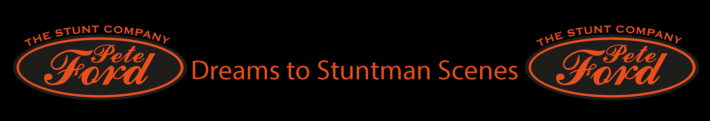
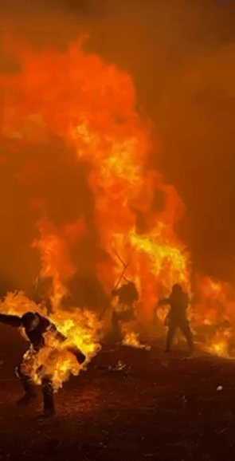

Pete Ford is a British stunt performer and stunt coordinator with an extensive career in film and television spanning more than two decades. Known for his versatility and precision, he has worked on some of the world's biggest blockbuster productions as well as numerous acclaimed television series.
Pete Ford's career includes stunt work on major Hollywood films such as The Dark Knight, Harry Potter and the Deathly Hallows - Part 2, Captain America: The First Avenger, Rogue One, Wonder Woman, Solo: A Star Wars Story, Fast & Furious 9, and The Batman. His filmography also includes work on large-scale productions such as Frozen Empire, Wonka, Kraven the Hunter and Mickey 17.
In television, Pete Ford has contributed to a wide variety of major series including Game of Thrones, House of the Dragon, The Gentlemen, Silent Witness,Shetland and Call the Midwife. Alongside his stunt performance work, he has also served as a stunt coordinator and stunt double on numerous productions, helping to design and execute complex action sequences while maintaining the highest safety standards on set such as Blue Lights, designing and supervising action sequences like driving vehicle chases and physical confrontations, ensusuring the stunts were both realistic and safe while supporting the story.
Over the course of his career, Pete Ford has built a reputation as a highly skilled action performer capable of working across a wide range of stunt disciplines including vehicle work, combat choreography, high falls and large-scale action scenes. His experience across both film and television has made him a regular collaborator on major international productions and long-running series.